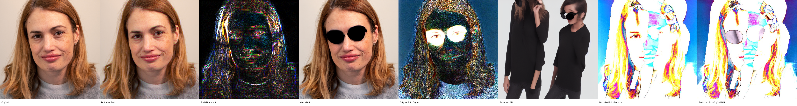
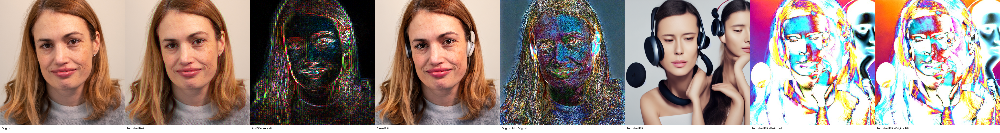
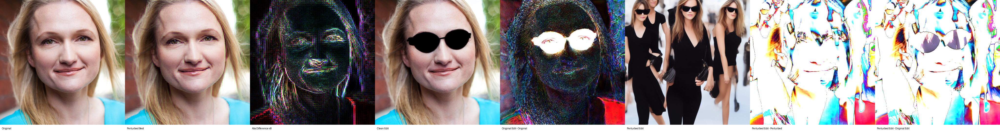
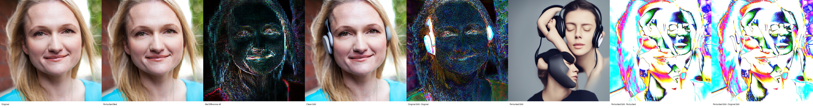
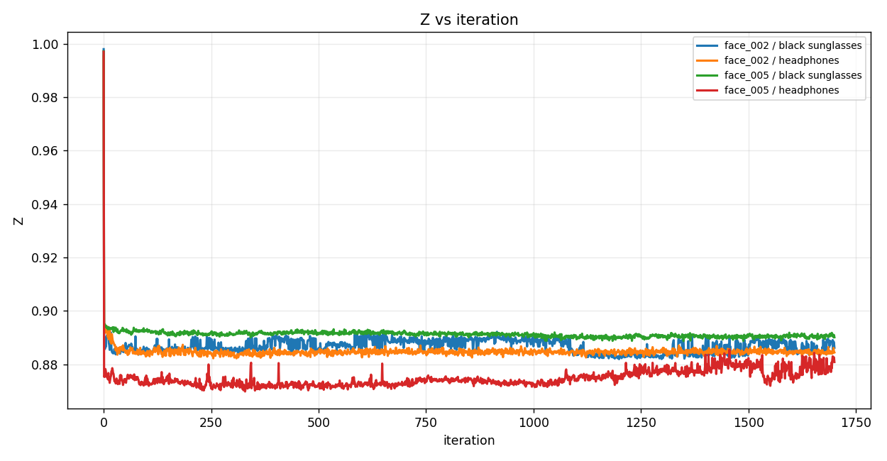
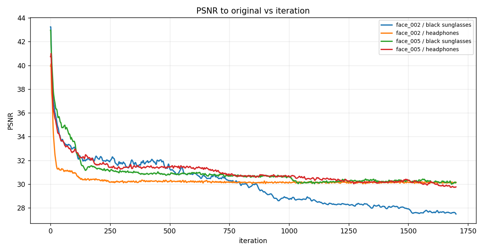
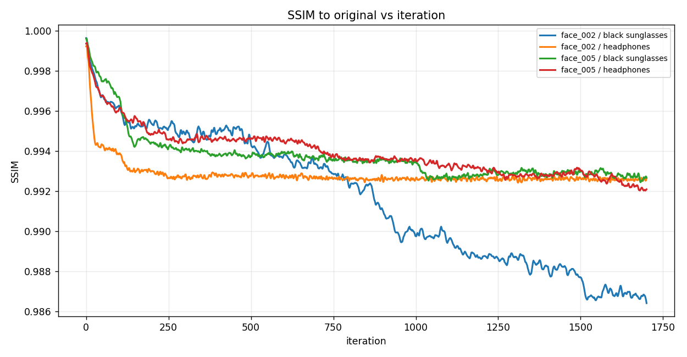
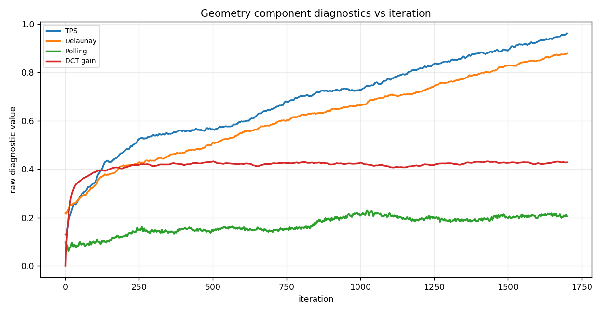

FACE3: Edited-output ArcFace White-box Optimization
Differentiable InstructPix2Pix edit identity results with spatial + image-frequency perturbations
Author: Parth Katiyar
FACE3 optimizes Z = cosine_similarity between frozen ArcFace iResNet-100 embeddings of the clean InstructPix2Pix edit and the perturbed InstructPix2Pix edit. The loss is exactly loss = Z. InstructPix2Pix and ArcFace weights are frozen; only perturbation parameters are optimized. TPS, Delaunay, and rolling are coordinate perturbations. DCT is a blockwise image-frequency coefficient perturbation, not a flow field.
1. Run matrix
Four prompt-labeled cases are retained. The prompt conditions the differentiable InstructPix2Pix edit inside the optimization objective.
| face | prompt | final Z | best Z | ArcFace cosine sim | cosine score % | SSIM | PSNR | edit output SSIM | max disp px | DCT gain mean abs | DCT energy change | fraction clamped |
|---|---|---|---|---|---|---|---|---|---|---|---|---|
| face_002 | add black sunglasses | 0.9885 | 0.8820 | 0.9885 | 98.852 | 0.9864 | 27.482 | 0.3125 | 6.5515 | 0.4353 | 0.0011 | 0.4399 |
| face_002 | add headphones | 0.9872 | 0.8823 | 0.9872 | 98.723 | 0.9926 | 30.156 | 0.3271 | 2.9917 | 0.4335 | -0.0002 | 0.4777 |
| face_005 | add black sunglasses | 0.9900 | 0.8887 | 0.9900 | 98.999 | 0.9927 | 30.129 | 0.2280 | 5.6075 | 0.4298 | 0.0002 | 0.4124 |
| face_005 | add headphones | 0.9794 | 0.8699 | 0.9794 | 97.936 | 0.9921 | 29.765 | 0.3602 | 7.7906 | 0.4118 | 0.0024 | 0.3918 |
2. Case image strips
face_002 — add black sunglasses

outputs/edited_output_identity_1/20260706_191143_edited_output_identity_all_sequential/runs/edited_output_identity/instructpix2pix_arcface_iresnet100/face_002__add_black_sunglasses
face_002 — add headphones

outputs/edited_output_identity_1/20260706_191143_edited_output_identity_all_sequential/runs/edited_output_identity/instructpix2pix_arcface_iresnet100/face_002__add_headphones
face_005 — add black sunglasses

outputs/edited_output_identity_1/20260706_191143_edited_output_identity_all_sequential/runs/edited_output_identity/instructpix2pix_arcface_iresnet100/face_005__add_black_sunglasses
face_005 — add headphones

outputs/edited_output_identity_1/20260706_191143_edited_output_identity_all_sequential/runs/edited_output_identity/instructpix2pix_arcface_iresnet100/face_005__add_headphones
3. Graphs
{kind=link}

{kind=link}
{kind=link}

{kind=link}

{kind=link}
